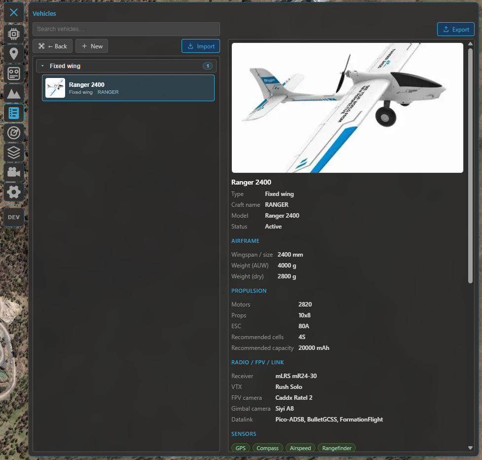
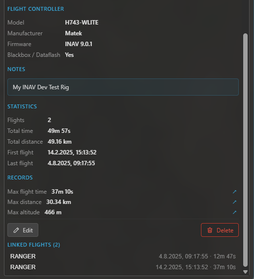

Vehicles¶
The vehicle library is a catalogue of your aircraft — a structured build sheet for each one, plus its flight history. Flights soft-link to a vehicle by craft name, so the library fills itself in as you fly. It's a subfeature of the logbook: open it with the Vehicles button in the logbook toolbar.
The vehicle list¶
Vehicles are grouped by type and can be searched (by name, craft name, model, type, notes or flight controller). Pick one to open its build sheet; the toolbar also creates a new vehicle and imports one from a file.

The vehicle library — your aircraft grouped by type, with search and per-vehicle build sheets.
The build sheet¶
Each vehicle is a structured record you can fill in as much (or as little) as you like:
- Identity — name, craft name (the link key — see below), type (fixed-wing, flying-wing, VTOL, multirotor, helicopter, rover, boat, other) and status (active, storage, retired, damaged, crashed), plus a header image and free-form notes.
- Airframe — model, wingspan, length, all-up weight and dry weight.
- Propulsion — motors, propellers, ESC, and a recommended battery (cells / capacity).
- Radio, FPV & datalink — receiver, video transmitter, camera, gimbal camera, datalink.
- Sensors — checkboxes for GPS, RTK, compass, airspeed, rangefinder and optical-flow.
- Flight controller — model, manufacturer, firmware and version, and whether blackbox is available.

A build sheet: image header, structured specs, lifetime stats and the flights linked to this aircraft.
Linking flights¶
A flight links to a vehicle by craft name (the name already recorded with each flight — so it works retroactively, no re-import needed):
- INAV supplies the craft name automatically, so flights link on their own.
- ArduPilot / PX4 don't carry one in telemetry — set it on the flight (post-flight or later in the logbook) to link it.
Each vehicle then shows its lifetime totals (flight count, time, distance) and the list of linked flights, jump-to-able from the build sheet.
INAV extras¶
When an INAV flight controller is connected (and disarmed):
- Write to FC — push the build sheet's craft name to the FC, so its future flights auto-link to this vehicle.
- Adopt FC lifetime stats — read the FC's onboard
statstotals (if the feature is enabled) and stage them as the vehicle's lifetime baseline; saved, they're added to the logbook flights so the totals reflect the airframe's whole life, including flights from before you used Kite.
Import & export¶
Move a vehicle between installs (or back it up) with a .kvehicle file — export the open vehicle, or
import one (with a preview before it's added). The lifetime baseline travels with the file.
Where to go next¶
- Where vehicles link from: Flight logbook.
- The other logbook library: Batteries.